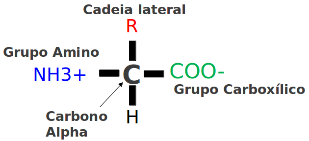

Uma proposta de algoritmo para o Modelo AB de dobramento de proteínas
Autor: Rafael Castro Couto Orientador: Prof. Karina dos Santos Machado Co-orientador: Prof. Leonardo Emmendorfer Rio Grande, 2014Sumário
- Objetivo
- Bionformática
- Proteínas
- Modelo AB
- Cadeias Primárias no Modelo AB
- Simulated Annealing
- Algoritmos de Distribuição Estimada
- Trabalhos Relacionados
- Aprendizagem de Máquina
- Algoritmo ANN
- Algoritmo ELA
- Aplicação para execução de experimentos
- Resultados
Objetivo
O objetivo deste trabalho é propor um novo algoritmo para o dobramento de proteínas utilizando o Modelo AB.
Bionformática
Bioinformática tem como objetivo principal a análise de dados biológicos. Nessa área, computadores são usados para resolver problemas na área de ciências biológicas, envolvendo a manipulação de bancos de dados.
Um dos problemas mais importantes dentro da área de Bioinformática e Biologia computacional que continua em aberto é a predição do dobramento de proteínas.
Proteínas
Uma proteína pode ser definida como um polímero linear composto por aminoácidos.
Os aminoácidos são moléculas constituídas por um átomo de carbono alpha central, um átomo de hidrogênio, um grupo carboxilo, um grupo amino e uma cadeia lateral ou grupo R.
 Moléculas que compõem um aminoácido.Estrutura Primária
A sequência de aminoácidos ao longo da cadeia polipeptídica é denominada estrutura primária.
Existe a hipótese de a estrutura primária específica de cada proteína conter a informação que indica a sua conformação final e o caminho para atingir esse estado.
 Sequência primária da proteína PTB ID 1AHO.
Sequência primária da proteína PTB ID 1AHO.
Estrutura Secundária
A estrutura secundária é determinada pelo relacionamento estrutural de curta distância e se caracteriza por duas formações principais: as alfa-hélices e as folhas-beta, além de estruturas de ligação chamadas alças.
 Representação tridimencional de alfa-hélices
Representação tridimencional de alfa-hélices
 Representação tridimencional de folhas-beta.
Representação tridimencional de folhas-beta.
Estrutura Quaternária
As proteínas podem ter duas ou mais cadeias polipeptídicas, a conformação dessas cadeias em estruturas tridimensionais é a estrutura quaternária.
 Estrutura quaternária da proteína PDB ID 1BVR.
Estrutura quaternária da proteína PDB ID 1BVR.
Dobramento de Proteínas
A sequência de aminoácidos específica de uma proteína, também denominada estrutura primária, dobra-se para formar a sua configuração nativa. A dobra muda de acordo com as moléculas que as rodeiam, incluindo enzimas, concentração dos sais, a pressão, a temperatura, enfim de infinitos elementos.
De acordo com Anfinsen, a conformação nativa de uma proteína, é a configuração termodinamicamente mais estável. Assim, o problema de predição de dobramento pode ser visto como um problema de otimização NP-completo.
Modelo AB
No Modelo AB, a proteína é descrita como uma sequência de aminoácidos hidrofóbicos (A) e hidrófilos (B). Muitas propriedades como massa, volume e carga eletromagnética também não são consideradas.
Nesse modelo, os ângulos são restritos entre -180º e + 180º.

Cálculo da Energia no Modelo AB
Onde E representa a energia, N corresponde ao comprimento da sequência de aminoácidos, a é o tipo do aminoácido (A ou B), C são as cargas dadas, theta é o ângulo entre os aminoácidos e d a distância entre os aminoácidos.

Mapeamento do espaço de busca
Foi desenvolvida uma aplicação calcular a energia em todas as conformações possíveis de uma proteína simplificada de acordo com o Modelo AB.
Com o objetivo de gerar gráficos bidimensionais, foram utilizados tetrâmeros, ou seja, cadeias com quatro aminoácidos. O primeiro e o último ângulo não mudam a conformação do modelo de proteína, pois sua alteração não gera uma dobra. Mudar os ângulos das extremidades significa girar toda a proteína. Portanto, o conjunto de todas as possíveis soluções para os tetrâmeros pode ser repesentado como um vetor bidimensional.
Simulated Annealing
Simulated Annealing (SA) é uma meta heurística genérica para problemas de otimização global que consiste em uma técnica de busca local probabilística. É usada normalmente em grandes espaços de busca e se fundamenta numa analogia com a segunda lei da termodinâmica. Seu nome é inspirado no processo de recozimento, utilizado em metalurgia para obtenção de estados de baixa energia num sólido. Neste processo, o metal é inicialmente aquecido à altas temperaturas e, em seguida, é resfriado lentamente e seu resfriamento é acompanhado e controlado de acordo com funções específicas.
EDAs
EDAs utilizam uma distribuição de probabilidade, que pode ser codificada por uma rede Bayesiana, uma distribuição normal multivariada, ou outra classe de modelo e consideram as relações entre as conexões.

EDAs iniciam a busca criando um conjunto de soluções. Inicia-se então um ciclo de análise dos resultados, seleção de bons resultados e geração de novo conjunto de soluções. O critério de parada que interrompe o ciclo pode ser de acordo com o número de etapas, o tempo de execução, entre outros.
Aprendizagem de Máquina
O conceito de Aprendizagem de Máquina pode ser descrito como um processo cujo objetivo é melhorar a performance na solução de um problema através da experiência acumulada nas soluções anteriores.
Trabalhos Relacionados
A hipótese de Anfisen levanta dois principais problemas. O primeiro é desenvolver uma fórmula que defina a energia de uma proteína real. O segundo problema é desenvolver os métodos computacionais de otimização para busca da energia mínima através dessa fórmula.
Em 1993, Stillinger, Head-Gordon e Hirshfeld publicam o Modelo AB.
Em um artigo posterior, Stillinger ressalta a importância das sequências de aminoácidos para o modelo e analisa proteínas de até 55 aminoácidos: Center Doped (An-B-An) e inspiradas na série de Fibonacci.
Proposta de algoritmo
para o Modelo AB
Neste trabalho são propostos dois algoritmos para o Modelo AB. O primeiro algoritmo, chamado de algoritmo ANN é inspirado no Simulated Annealing. Devido à sua simplicidade, este algoritmo converge sempre para um ótimo local.
Por esse motivo foi desenvolvido um algoritmo mais complexo denominado ELA, capaz de explorar o espaço de busca de forma inteligente. O segundo algoritmo proposto é baseado nos algoritmos EDAs e nos conceitos de aprendizagem de máquina.
Algoritmo ANN
De forma análoga ao método Simulated Annealing, porém de forma simplificada, foi desenvolvido o algoritmo ANN que substitui a solução atual por uma solução próxima, escolhida de acordo com uma função objetivo e com uma variável que representa a temperatura.
Esse algoritmo não possui nenhuma função específica que torne possível a aceitação de soluções inferiores às encontradas anteriormente e não utiliza nenhum tipo de aleatoriedade.

O valor inicial a dos ângulos é determinado pelo usuário. A cada etapa, cada ângulo do modelo é alterado nas duas direções, positiva e negativa, calculando a energia de ambas conformações. É escolhida então a conformação mais estável entre as três conformações calculadas (direção positiva +a, direção negativa -a e não alterar o ângulo). Após o cálculo do último ângulo da cadeia é decrementado o valor de a através do parâmetro delta.
Algoritmo ELA
Estimated Learning Algorithm
De forma a contornar os problemas apresentados pelo algoritmo ANN, foi desenvolvida uma solução que utilizasse técnicas menos diretas, que tratassem o problema em um nível mais subjetivo
Dentre esses conceitos, dois foram os que serviram de inspiração para esta proposta: o conceito de Aprendizagem de Máquina e os algoritmos de Distribuição Estimada (EDAs).
Aplicação para execução de experimentos
Com o objetivo de executar os algoritmos ANN e ELA, auxiliar a calibragem dos parâmetros e demonstrar os resultados obtidos, foi desenvolvida uma aplicação com interface de usuário amigável capaz de serializar os testes e armazenar os dados em disco para posterior análise.

Após diversos conjuntos de testes, ao fim da execução, um novo gráfico interativo onde são exibidos os valores de enegia obtidos pelos melhores modelos de cada conjuntos teste e sua média.
Resultados
Após uma calibragem inicial manual através da análise individual dos dados, partiu-se para a análise devida dos parâmetros que foram considerados mais relevantes para esta contribuição. Foram realizados 30 testes para cada conjunto de parâmetros analizados utilizando a cadeia Fibonacci(7) com 21 aminoácidos na cadeia.

Observa-se, pela média, que todos os conceitos contribuem para melhorar os resultados obtidos, porém nem sempre o mínimo encontrado em cada conjunto de testes acompanha a média dos resultados dos testes.

| Cadeia | ACMC | STMD | HTS | CSA | ELA+ANN |
|---|---|---|---|---|---|
| FIBO6(13) | -3.2941 | -3.2941 | -3.2941 | -3.2941 | -3.27562491074513 |
| FIBO7(21) | -6.1976 | -6.1980 | -6.1680 | -6.1980 | -6.0578768984653 |
| FIBO8(34) | -10.8060 | -10.8060 | -10.8060 | -10.8060 | -9.23852675468751 |
| FIBO9(55) | -18.7407 | -18.9202 | -19.257 | -18.9296 | -13.441023912647 |
| 1AGT(34) | - | - | -23.0575 | - | -23.2433303926769 |
| 1AHO(64) | - | - | -22.7554 | - | -21.7818222352442 |
Resultados
Conclusão
O trabalho aponta diversas áreas para pesquisas futuras que podem tornar a proposta mais abrangente.
Apesar dos resultados serem muito importantes para a proposta, o que se espera é validar as técnicas propostas e no futuro combiná-las com outras, gerando heurísticas de alto nível que possam ser utilizadas em outros problemas complexos.